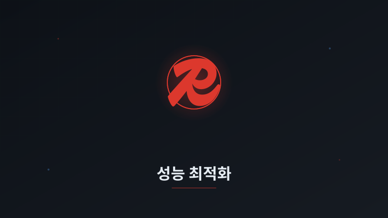

배너 성과 집계 API 성능 최적화
목차
- 배경: 일일 90만 건의 배너 이벤트 수집
- 문제 분석: Row-level Lock 경합
- 해결 방안 검토: 3가지 옵션 비교
- 아키텍처 설계: Redis 집계 + 배치 동기화
- 핵심 구현 1: Redis Hash로 실시간 집계
- 핵심 구현 2: EventBridge + Lambda 배치 동기화
- 결과
배경: 일일 90만 건의 배너 이벤트 수집
에브리타임 앱 내에 에브리유니즈 단독 '혜택탭'이 출시되면서, 에브리유니즈로의 전환율이 크게 증가했고 전체 트래픽이 30% 이상 급증했습니다. 거의 모든 페이지에 프로모션 배너가 배치되어 있었기 때문에, 배너 성과 집계 API도 트래픽에 비례하여 선형적으로 증가하며 전체 API 중 호출량 1위를 기록하게 되었습니다.
트래픽 규모:
- 일일 배너 이벤트(노출+클릭): 약 90만 건
- 평균 초당 약 10건이지만, 인기 배너에 동시 요청이 집중되는 핫스팟 패턴평균 수치만 보면 MySQL이 충분히 처리할 수 있는 수준이지만, 문제는 트래픽이 균등하게 분산되지 않는다는 점입니다. 특정 프로모션 배너에 노출/클릭이 집중되면서 DB에 부하가 집중되기 시작했고, Lock 경합과 Lock Wait Timeout이 빈번하게 발생했습니다.
문제 분석: Row-level Lock 경합
기존 구조의 문제
기존 시스템은 배너 이벤트가 발생할 때마다 MySQL에 직접 INSERT ON DUPLICATE KEY UPDATE를 실행하는 구조였습니다. 이 구문은 중복 키가 감지되면 해당 Row에 Exclusive Lock(X Lock)을 획득한 뒤 UPDATE를 수행합니다. 같은 키(banner_id + date)에 동시 요청이 집중되면 X Lock 경합이 발생하고, 이는 단순 트래픽 과부하가 아닌 구조적 Lock 메커니즘에 기인한 문제였습니다.
배너 이벤트 발생 시 동작:
router.post("/api/banner/performance/impression", async (req, res, next) => {
const { bannerId } = req.body;
const date = new Date();
await usMapper.queryWithValues(`
INSERT INTO banner_performance (banner_id, impression, click, date) VALUES (?)
ON DUPLICATE KEY UPDATE impression = impression + 1
`, [[bannerId, 1, 0, date]]);
apiHandler.send(res, { success: true }, next);
});문제점:
1. X Lock 경합과 Lock Wait Timeout
같은 키에 동시 요청이 집중되면 X Lock 대기열이 길어지고, 대기 시간이 innodb_lock_wait_timeout을 초과하면 트랜잭션이 실패합니다.
요청 A: INSERT → 중복 감지 → X Lock 획득 → UPDATE 수행 중
요청 B: INSERT → 중복 감지 → X Lock 대기 (A가 점유 중)
요청 C: INSERT → 중복 감지 → X Lock 대기 (A, B 뒤에 대기)
→ 대기열이 길어지면 Lock wait timeout exceededsequenceDiagram
participant A as 요청 A
participant DB as MySQL (banner_performance)
participant B as 요청 B
participant C as 요청 C
A->>DB: INSERT ON DUPLICATE KEY UPDATE
Note over A,DB: X Lock 획득, UPDATE 수행
B->>DB: INSERT ON DUPLICATE KEY UPDATE
Note over B,DB: X Lock 대기 (A 점유 중)
C->>DB: INSERT ON DUPLICATE KEY UPDATE
Note over C,DB: X Lock 대기 (A, B 뒤 대기열)
A-->>DB: COMMIT (X Lock 해제)
Note over B,DB: X Lock 획득
Note over C,DB: 계속 대기... timeout 초과 시 실패2. 다른 API에 대한 연쇄 영향
배너 집계 API의 DB 부하로 인해 같은 RDS를 사용하는 다른 API들도 느려지는 현상이 발생했습니다.
해결 방안 검토: 3가지 옵션 비교
검토 시 가장 중요했던 기준은 기존 시스템 영향도 최소화였습니다. 어드민의 집계 조회 로직은 변경하지 않고, API의 Write 경로만 수정하여 빠르게 적용할 수 있는 방안을 우선했습니다.
방안 1: 데이터 구조 변경 (Row INSERT)
집계 테이블에 UPDATE하는 대신 이벤트를 개별 Row로 저장하는 방식입니다. INSERT only이므로 같은 Row에 대한 X Lock 경합은 해소됩니다.
-- 클릭 이벤트를 Row로 저장
INSERT INTO banner_clicks (banner_id, clicked_at) VALUES (1, NOW());
-- 집계는 별도 쿼리
SELECT COUNT(*) FROM banner_clicks WHERE banner_id = 1 AND clicked_at >= '2024-05-01';불채택 이유:
- 데이터 적재량 증가로 인한 스토리지 비용 부담 (일일 90만 건 × 365일)
- 기존 어드민의 집계 조회 쿼리를
COUNT,GROUP BY기반으로 전면 변경해야 함 - Lock 문제는 해소되지만, API뿐 아니라 어드민까지 수정 범위가 확대됨
방안 2: 메시지 큐 비동기 처리
SQS 등 메시지 큐를 두어 API에서는 이벤트만 발행하고, Consumer가 비동기로 DB에 적재하는 방식입니다.
불채택 이유:
- Consumer가 결국 동일한
INSERT ON DUPLICATE KEY UPDATE를 실행하므로 Lock 경합이 그대로 발생 - API의 응답 속도는 개선되지만 DB 부하의 근본적 해결이 아님
- 메시지 큐 인프라 추가 비용과 운영 복잡도 증가
방안 3: Redis 집계 + 배치 동기화 (채택)
Redis에서 실시간 집계 후 주기적으로 DB에 동기화하는 방식입니다(캐시 패턴으로는 Write-back에 해당). Redis는 싱글스레드로 동작하기 때문에 HINCRBY 명령어 자체가 원자적이며, Lock이라는 개념 자체가 불필요합니다.
채택 이유:
- 기존 ElastiCache(Redis) 인프라를 그대로 활용 (추가 비용 없음)
- API의 Write 경로만 Redis로 변경하면 되어 기존 어드민 조회 로직에 영향 없음
- DB에는 배치로 동기화하므로 Lock 경합을 근본적으로 해소
| 기준 | Row INSERT | 메시지 큐 | Redis 집계 |
|---|---|---|---|
| Lock 경합 해소 | O (INSERT only) | X (동일 구문) | O (Lock 불필요) |
| DB 부하 감소 | X (쓰기량 증가) | X (동일) | O (배치 동기화) |
| 기존 시스템 영향 | 어드민 조회 전면 수정 | 낮음 | API Write만 변경 |
| 추가 인프라 비용 | 스토리지 증가 | SQS 인프라 | 없음 (기존 ElastiCache) |
| 개발 공수 | 높음 | 중간 | 낮음 |
당시에는 "고빈도 카운터 성능 문제를 가장 빠르게 해소"하는 것이 1순위였기 때문에 Redis 집계 방식이 최적의 선택이었습니다.
아키텍처 설계: Redis 집계 + 배치 동기화
전체 아키텍처

핵심 흐름:
- 실시간 집계: 배너 이벤트 → API Server → Redis
HINCRBY(즉시 응답) - 배치 동기화: EventBridge가 10분마다 Lambda를 트리거 → Redis
SCAN→ MySQLBulk UPSERT - 조회: 어드민 API는 MySQL만 조회 (기존 로직 변경 없음)
핵심 구현 1: Redis Hash로 실시간 집계
Redis Hash 구조
같은 배너의 IMPRESSION과 CLICK을 하나의 키로 논리적으로 묶기 위해 Hash 구조를 선택했습니다. HGETALL로 한 번에 조회할 수 있어 배치 동기화 시에도 효율적입니다.
# String Key 방식 — 카운터마다 개별 키
SET banner_stats:20240501:1:IMPRESSION 12345
SET banner_stats:20240501:1:CLICK 890
→ 일 평균 3,000개 배너 × 2 카운터 = 6,000개 키
# Hash Key 방식 — 배너당 1개의 키에 필드 통합
HSET banner_stats:20240501:1 IMPRESSION 12345 CLICK 890
→ 일 평균 3,000개 배너 = 3,000개 키키 수가 절반으로 줄어드는 것 외에 메모리 측면의 이점도 있습니다. Redis에서 String Key는 키마다 dictEntry(32바이트, jemalloc 할당) + redisObject(16바이트) + SDS 헤더 등 약 70-90바이트의 메타데이터 오버헤드가 발생합니다. Redis 7 기준으로 Hash는 필드 수가 hash-max-listpack-entries(기본 512) 이하이고 값 크기가 작으면 내부적으로 listpack 인코딩을 사용해 필드를 연속된 메모리 블록에 순차 저장합니다. 배너 집계는 Hash당 필드가 2개뿐이라 listpack 인코딩 조건을 안정적으로 만족합니다.
데이터 모델:
Key: banner_stats:{date}:{banner_id}
Fields:
- IMPRESSION: 노출 수
- CLICK: 클릭 수
명령어: HINCRBYRedis는 싱글스레드로 동작하기 때문에 HINCRBY 명령어로 Lock 경합 없이 안정적으로 값을 누적할 수 있습니다. MySQL에서 발생하던 Row-level Lock 경합 문제가 원천적으로 해소됩니다.
TTL 및 메모리 관리:
각 키에 7일 TTL을 설정했습니다. 10분 주기 배치가 정상 동작하면 데이터는 즉시 DB에 반영되지만, 배치 실패나 Redis 장애 시 데이터 유실을 대비하여 보수적으로 7일간 보관하도록 결정했습니다.
- 일당 활성 배너 키: 약 3,000개
- 7일 보관: 약 21,000개 키
- 키당 크기: Hash 2필드 (IMPRESSION, CLICK), listpack ≈ 100바이트
- 총 메모리: 약 2.1MB기존 ElastiCache 인스턴스에서 유의미한 메모리 영향이 없는 수준이며, 별도의 메모리 관리 전략이 불필요했습니다.
API 구현
이벤트 카운트 증가:
@Post('/banners/:id/click')
async incrementClick(@Param('id') bannerId: number) {
const dateKey = dayjs().format('YYYYMMDD');
const key = `banner_stats:${dateKey}:${bannerId}`;
try {
await this.redis
.multi()
.hincrby(key, 'CLICK', 1)
.expire(key, 60 * 60 * 24 * 7, 'NX') // 최초 생성 시에만 TTL 7일 설정
.exec();
return { success: true };
} catch (error) {
this.logger.error(
`Banner stats increment failed - bannerId: ${bannerId}, type: CLICK`,
error,
);
throw error;
}
}핵심 구현 2: EventBridge + Lambda 배치 동기화
배치 주기 결정
초기에는 일일 1회(오전 6시, 트래픽 최소 시간대) 배치로 운영했습니다. 그러나 Redis 장애 발생 시 하루치 데이터가 유실될 위험이 있어, 실제 데이터를 소비하는 마케팅팀과 논의하여 10분 주기로 결정했습니다. 마케팅팀 기준으로 실시간 정확도보다는 일 단위 집계의 정확성이 중요했기 때문에, 최대 10분 지연은 허용 가능한 수준이었습니다.
| 주기 | 장점 | 단점 | 결정 |
|---|---|---|---|
| 1분 | 데이터 유실 최소화 | DB 부하 여전히 높음 | ❌ |
| 10분 | 유실 위험 최소화 + DB 부하 감소 | 최대 10분 지연 | ✅ |
| 1시간 | DB 부하 크게 감소 | 유실 시 1시간 데이터 손실 | ❌ |
| 일일 1회 | DB 부하 최소 | 장애 시 하루치 데이터 유실 | ❌ (기존) |
배치 아키텍처
EventBridge Scheduler가 Lambda를 두 가지 모드로 트리거합니다.
# 10분마다 정기 동기화
BannerStatsSyncSchedule:
Type: AWS::Scheduler::Schedule
Properties:
ScheduleExpression: rate(10 minutes)
Target:
Input: '{"mode":"regular"}'
# 매일 00:05 전일(D-1) 최종 확정
BannerStatsFinalizeSchedule:
Type: AWS::Scheduler::Schedule
Properties:
ScheduleExpression: cron(5 0 * * ? *)
Target:
Input: '{"mode":"finalize_yesterday"}'- 정기 동기화 (10분마다): Redis
SCAN으로 당일 데이터를 조회하여 DB에 UPSERT - 전일 최종 확정 (자정 이후 1회): Redis 데이터와 CloudWatch 로그를 함께 집계하여, 배치 실패나 날짜 경계(23:59-00:xx) 구간에서 누락된 이벤트까지 보정한 뒤 최종 UPSERT
보정 시에는 날짜 경계 구간(23:50~00:10) 로그를 대상으로 request_id 기준 중복 제거를 적용해, 지연 유입/중복 집계를 방지했습니다.
Lambda 함수:
export const handler = async (event: { mode: string }) => {
const isFinalize = event.mode === 'finalize_yesterday';
const targetDate = isFinalize
? dayjs().subtract(1, 'day').format('YYYYMMDD')
: dayjs().format('YYYYMMDD');
// 1. Redis SCAN으로 데이터 조회 (KEYS 대신 SCAN으로 점진 탐색하여 블로킹 방지)
const redisStats = await scanBannerStats(targetDate);
// 2. 전일 최종 확정 시 CloudWatch 로그에서 누락 이벤트 합산
if (isFinalize) {
const logStats = await aggregateFromCloudWatchLogs(targetDate);
mergeStats(redisStats, logStats);
}
// 3. 역행 감지 — incoming < current이면 UPSERT 제외 및 알람
const currentStats = await fetchCurrentStats(targetDate);
const regressions = detectRegressions(redisStats, currentStats);
if (regressions.length > 0) {
await sendAlert(regressions);
excludeFromSync(redisStats, regressions);
}
// 4. DB에 Bulk UPSERT (누적값 절대치 반영)
if (redisStats.length > 0) {
await db.raw(`
INSERT INTO banner_daily_stats (date, banner_id, impressions, clicks)
VALUES ${redisStats.map(() => '(?, ?, ?, ?)').join(', ')}
ON DUPLICATE KEY UPDATE
impressions = VALUES(impressions),
clicks = VALUES(clicks)
`, redisStats.flatMap(s => [s.date, s.bannerId, s.impressions, s.clicks]));
}
};UPSERT(절대값 반영) 방식의 데이터 정합성:
배치 동기화는 INCREMENT(증분)가 아닌 UPSERT + 절대값 반영 방식입니다. Redis에 저장된 값은 HINCRBY로 계속 누적되는 값이므로, DB에는 Redis의 최신 누적값으로 덮어씁니다.
이 방식의 장점은 정합성 관리가 단순해진다는 점입니다:
- SCAN과 UPSERT 사이에 새로운 HINCRBY가 발생하면? → 다음 배치에서 최신 누적값으로 반영되므로 유실 없음
- Lambda가 DB UPSERT 중 실패하면? → Redis 데이터는 그대로 유지되므로, 다음 배치에서 최신 값으로 재시도하여 자동 복구
- 같은 데이터가 2번 동기화되면? → 동일한 절대값으로 재반영될 뿐, 중복 적산되지 않음
결과
지표 정의와 측정 기준
| 지표 | 값 | 측정 기준/기간 | 출처 |
|---|---|---|---|
| Write IOPS 감소율 | 10배 이상 감소 | 적용 전/후 동일 트래픽 구간 비교 (운영 관측) | RDS 모니터링 대시보드 |
| RDS CPU 사용률 | 약 20% 감소 | 적용 전/후 평균 CPU 비교 | CloudWatch CPUUtilization |
| EC2 CPU 사용률 | 약 8% 감소 | 적용 전/후 평균 CPU 비교 | CloudWatch CPUUtilization |
| Row-level Lock 경합 | 운영 관측상 해소 | 적용 후 동일 이벤트 피크 구간 관찰 | DB lock 로그 |
성능 개선
| 지표 | 개선 내용 |
|---|---|
| Write IOPS | 10배 이상 감소 |
| RDS CPU 사용률 | 약 20% 감소 |
| EC2 CPU 사용률 | 약 8% 감소 |
| Row-level Lock 경합 | 운영 관측상 해소 |
기존에는 모든 배너 이벤트가 INSERT ON DUPLICATE KEY UPDATE로 DB에 직접 Write했지만, Redis 전환 후에는 이 SQL 호출 자체가 제거되었습니다. 이로 인해:
- RDS: 초당 수십 건의 Write 쿼리가 10분마다 1회 Bulk UPSERT로 대체되어 Write IOPS와 CPU 사용률이 대폭 감소
- EC2: Lock Wait으로 인한 DB 커넥션 장기 점유가 사라지면서 커넥션 풀 고갈 문제가 해소되고, Node.js 이벤트 루프의 콜백 지연도 줄어들어 전체 CPU 사용률 감소
- ElastiCache: 단순 카운터 누적은 Redis에게 매우 가벼운 연산으로, CPU나 메모리 사용률에 유의미한 영향 없음
비용
| 항목 | 변경 내용 |
|---|---|
| ElastiCache | 기존 인프라 활용 (추가 비용 없음) |
| EventBridge + Lambda | 월 $1 미만 |
비용 지표는 AWS 청구서 기준 월 평균 관측값입니다. 기존 인프라를 그대로 활용하면서 성능, 비용, 안정성 모두 개선할 수 있었습니다.
배운 점
1. 발상의 전환이 가장 효과적인 최적화였습니다
- 기존 로직을 복잡하게 튜닝하는 대신, "실시간으로 RDB에 쓸 필요가 있는가?"라는 질문 하나가 해결의 시작이었습니다
- 쓰기 경로를 Redis로 분리하는 단순한 구조 변경만으로 Lock 경합, 커넥션 풀 고갈, CPU 상승까지 연쇄적으로 해소됐습니다
- 복잡한 구현보다 문제의 본질을 정확히 파악하는 것이 더 큰 성능 개선을 만든다는 걸 체감했습니다
2. 기존 시스템 영향도를 최소화하는 설계
- 어드민의 집계 조회 로직, 기존 테이블 구조, 다른 API 등 기존 시스템을 건드리지 않는 것을 최우선으로 설계했습니다
- API 레이어의 쓰기 경로만 변경하고, 배치로 동일한 테이블에 동기화하는 방식으로 나머지 시스템은 변경 없이 동작하게 했습니다
- 프로덕션 환경에서는 "무엇을 바꾸지 않을 것인가"를 먼저 정하는 것이 안정적인 개선의 핵심이었습니다
3. 기술적 의사결정에는 이해관계자의 맥락이 필요합니다
- 배치 주기, 데이터 정합성 허용 범위 등은 순수한 엔지니어링 판단이 아니라 실제 사용하는 마케팅팀과의 논의를 통해 결정했습니다
- "10분 이내 반영이면 충분하다"는 현업의 요구사항이 있었기에 실시간 동기화 대신 배치 방식을 선택할 수 있었습니다
- 기술적 트레이드오프를 판단할 때, 비즈니스 요구사항을 먼저 확인하는 습관의 중요성을 배웠습니다
4. 단순한 구현에도 고민할 포인트는 많았습니다
- Redis 자료구조 선택(String vs Hash), TTL 정책, 배치 주기, 역행 감지와 알림, 전일 데이터 보정 등 하나하나가 근거 있는 의사결정이 필요했습니다
- 단순해 보이는 구현이라도 "왜 이렇게 했는가"를 설명할 수 있어야 한다는 점에서, 설계 과정 자체가 좋은 경험이었습니다
기술 스택
| 분류 | 기술 |
|---|---|
| 캐시/집계 | Redis (ElastiCache) |
| 데이터베이스 | MySQL (RDS) |
| 배치 스케줄러 | AWS EventBridge Scheduler |
| 배치 처리 | AWS Lambda |